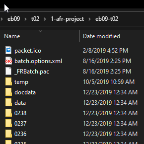

AFR has a proprietary compressed-file folder structure for
its OCR-Projects, which we use to organize each 150-
to 250-page page section. The special data files in the ocr-project retain the text boxes and language settings and can be used
to output text in multiple formats. The folder name includes the edition and page section name, such as
eb09-r01.Figure 1. 1-afr-project folder

DANGER:
ocr-project folders contain hidden files by
default that are essential to their retention of text boxes, etc. When creating an
ocr-project, change the attribute value on the three
hidden files to unhidden to ensure that they are
included whenever the folder is copied.